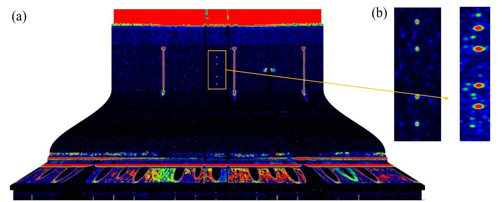
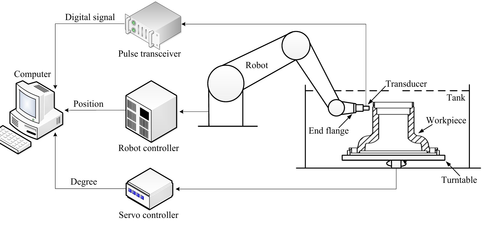
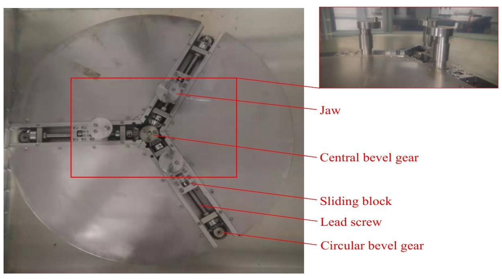
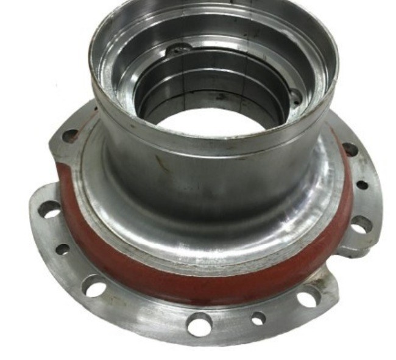
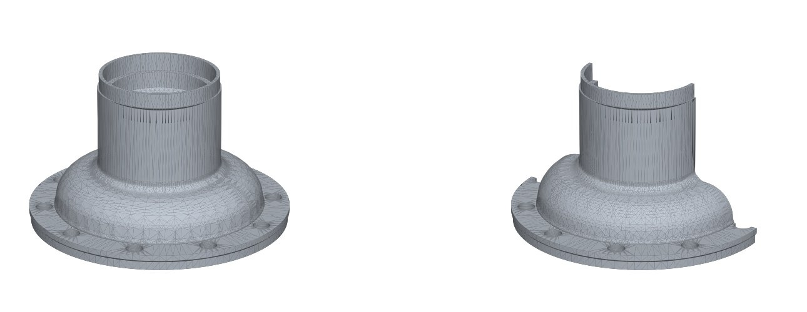
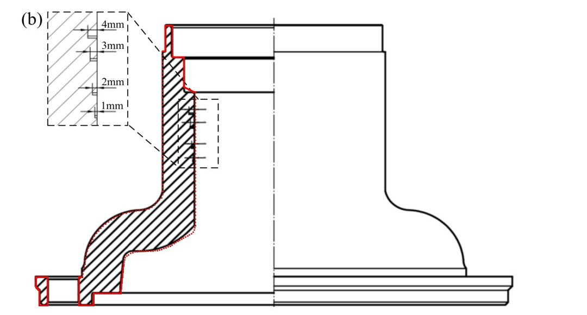

2023–24 · North China University of Technology
Robot-Assisted Ultrasonic Testing of Complex Revolved Workpieces机器人辅助复杂回转体超声检测

Problem问题
Wheel hubs, turbine disks and similar revolved parts can develop internal cracks from casting defects or long-term loading. Existing ultrasonic rigs mostly handle shafts and pipes with near-constant diameter, so hubs with curved, stepped profiles were still tested by hand, slowly and inconsistently.
轮毂、涡轮盘这类回转件可能因铸造缺陷或长期载荷产生内部裂纹。现有超声检测设备主要针对直径变化不大的轴类和管件，曲面、台阶复杂的轮毂大多还靠人工检测，效率低，结果也不稳定。
System系统组成
A 6-DOF robot holds the transducer and follows the part's profile in a water tank, while a turntable spins the part. The turntable extends the robot's reach, so the system can scan around the full part without singular poses or collisions. A digital flaw detector, the robot controller and the turntable servo all report to one industrial PC that runs the scan and stores the data.
六轴机器人夹持超声探头，在水箱中沿工件母线运动，转台同时带动工件旋转。转台相当于一个外部扩展轴，弥补了机器人的奇异位形和干涉限制，能扫查整个工件。数字探伤仪、机器人控制器和转台伺服都接到一台工控机上，由它统一控制扫查并记录数据。



Error Correction误差校正
The beam is sensitive to its angle of incidence, so the part's axis has to line up with the turntable's. The paper measures two errors with the transducer itself, using ultrasonic ranging:
声束对入射角很敏感，所以工件轴线必须和转台旋转轴重合。论文直接用探头做超声测距，测量两类误差：
- Verticality: the robot moves a known distance across a reference disc and measures the height change, giving the tilt angle. The software then compensates for it.
- 垂直度误差：机器人在基准圆盘上方平移已知距离，测量高度变化，得到倾斜角，再由软件补偿。
- Eccentricity: with the robot held still and the turntable rotating, the measured distance swings twice per turn. Half the peak-to-peak swing is the offset, which is then fixed by adjusting the jaws.
- 偏心误差：机器人固定不动、转台旋转一周，测得的距离会有最大和最小值；两者之差的一半就是偏心量，再通过调整卡爪消除。
Result实验结果
Four 0.8 mm flat-bottom holes, 1–4 mm deep and buried 26–29 mm below the scanned surface, all show clearly in the C-scan above. A 15 MHz transducer resolves them better than a 10 MHz one, but coarse grains in the cast iron also add more clutter at the higher frequency.
内壁上 4 个 0.8 mm 平底孔（钻深 1–4 mm，埋深 26–29 mm）在上方 C 扫描图中都能清楚识别。15 MHz 探头分辨率高于 10 MHz，但铸铁粗晶带来的杂波也更严重，选频率时需要兼顾材料特性。
My Role我的工作
- Made SolidWorks drawings of system parts.
- 用 SolidWorks 绘制系统零部件图纸。
- Ran the immersion scans on the wheel hub.
- 完成轮毂的水浸扫查实验。
Hub Model轮毂模型
I modelled the hub from the paper's section drawing. The wall at the defect zone is 30 mm (29 mm burial + 1 mm drill depth), which sets the scale; the red outline is the model's section laid over the paper's figure.
根据论文剖面图建立轮毂模型。缺陷区壁厚 30 mm（埋深 29 mm + 钻深 1 mm）作为比例尺；右图红线是模型剖面叠在论文原图上的效果。


Dimensions are estimated from the figure. Bolt-hole count is taken from the photo.
尺寸由图纸比例估算；螺栓孔数量按照片确定。
Wang J., Zhang H., Xu H., Wang C., Cao J., Liu T., Li Z., Yang J. Robot-Assisted Ultrasonic Testing Technology for Complex Revolved Workpiece. J. Phys.: Conf. Ser. 2679, 012006 (2024). Paper figures reused under CC BY 3.0.